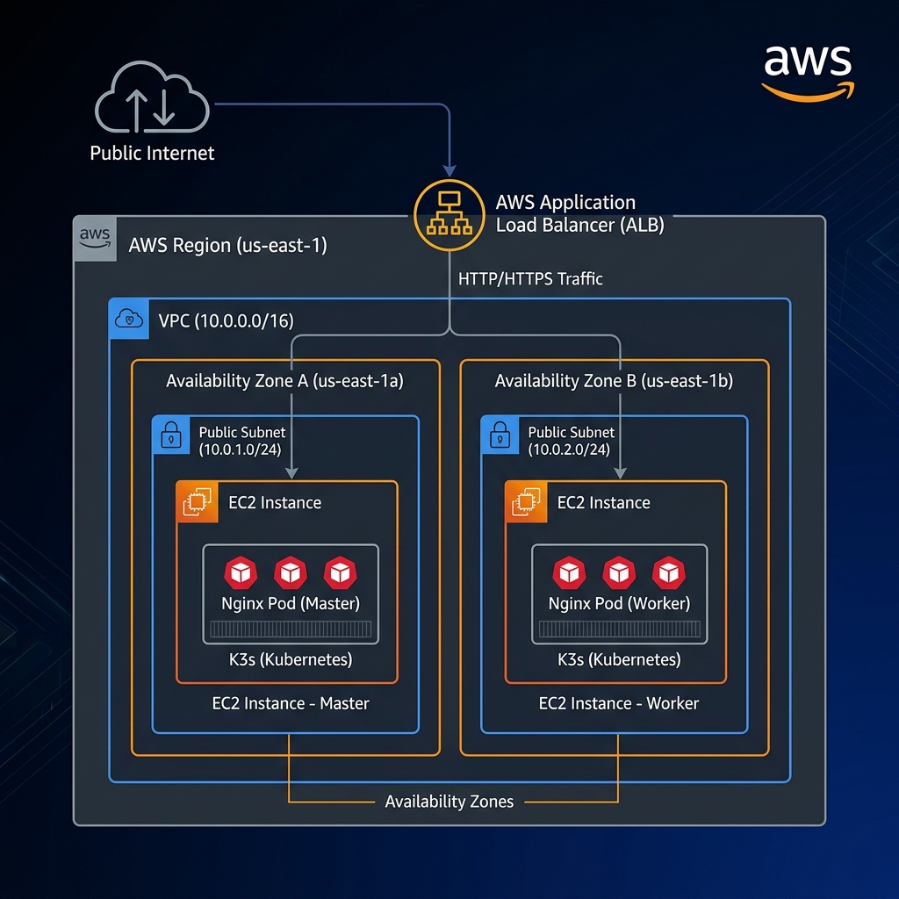

Automated Web Hosting with Terraform & K3s
Cloud Provider: Amazon Web Services (AWS)
Compute: 2x EC2 t4g.small (ARM Graviton)
Network: VPC with 2 Public Subnets
Security: Security Groups
Entry Point: Application Load Balancer (ALB)

Designed for Isolation and Availability:
| Protocol/Port | Purpose | Source |
|---|---|---|
| TCP 22 | SSH Management | Admin IP |
| TCP 80 | HTTP Traffic | Public |
| TCP 6443 | K8s API Server | Cluster Nodes |
| TCP 30080 | NodePort Exposure | Load Balancer |
Full automation via Terraform:
resource "aws_instance" "k3s_master" {
ami = data.aws_ami.ubuntu.id
instance_type = "t4g.small"
key_name = aws_key_pair.k3s_key.key_name
user_data = local.master_script
}
Why K3s?
Bootstrap:
# Cloud-init on Worker
curl -sfL https://get.k3s.io | K3S_URL=https://${MASTER_IP}:6443 \
K3S_TOKEN=${SECRET} sh -
Nginx Workload:
apiVersion: apps/v1
kind: Deployment
metadata:
name: bauermedia-app
spec:
replicas: 2 # Redundancy
template:
spec:
containers:
- name: nginx
image: nginx:latest
AWS Application Load Balancer:
Decision: AWS Graviton (ARM) EC2
Rationale: Best performance/cost ratio with Graviton processors.
Decision: K3s + NodePort
Rationale: Reduces complexity by avoiding heavy Ingress Controllers for a demo scale.
Decision: Terraform TLS Provider
Rationale: Zero-dependency deployment — no need for pre-existing SSH keys.
The Challenge: Synchronizing the K3s cluster bootstrap in a single-pass deployment without manual secrets management.
terraform apply.Automated, Scalable, and Ready for Deployment.
Terraform Output (Live Demo):
Apply complete! Resources: 16 added, 0 changed, 0 destroyed.
Outputs:
load_balancer_dns = "k3s-alb-315394441.us-east-1.elb.amazonaws.com"
master_public_ip = "44.199.228.122"
private_key = <sensitive>
worker_public_ip = "52.90.115.47"